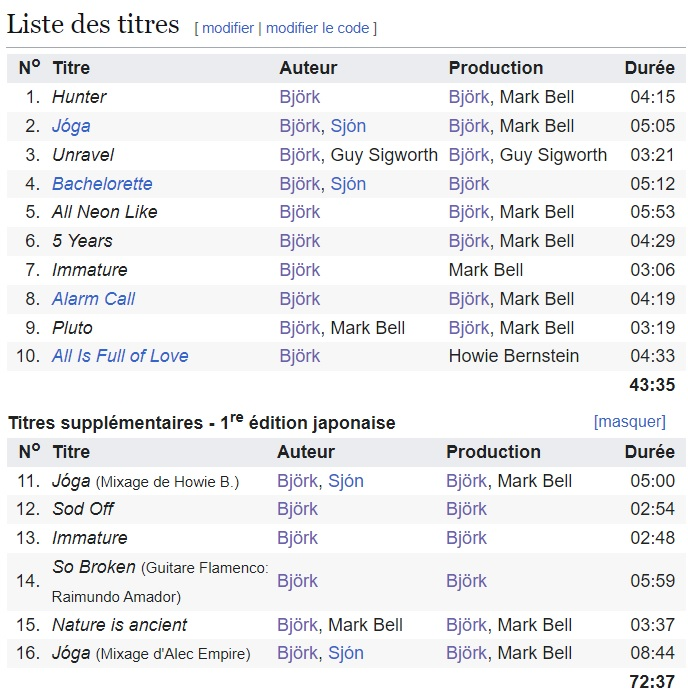

Björk étant l'une de mes artistes préférées, j'ai longtemps écouté Homogenic en boucle. J'avais acheté ce CD chez un disquaire, il contient 10 pistes. Ce que j'ignorais, et ce que j'ai appris pas plus tard que la semaine dernière en lisant la page wikipédia de l'album en question, c'est qu'il y avait en réalité 16 pistes. L'année où est sorti l'album (1997), les 6 dernières pistes n'ont été publiés que dans la version japonaise.

[Verse 1]
I know I've been tolerant 'til now
But here comes a warning
There's a very clear line that I'm drawing
And if you cross it
[Chorus]
Sod off
Sod off
[Verse 2]
If you think I'll let you pull me down to
Your third-class communication
And bulldoze over all my sensitivities
You've read me all wrong
[Chorus]
Sod off
Sod off
Sod off
Sod off
[Interlude]
Things so far have been too perfect
This is the premiere
But, oh, how many dress rehearsals
I've been through
[Verse 3]
Darling, this is far too pure and perfect
I let you corrupt it
Sod off!
I won't let you ruin this!
[Chorus]
Sod off
Sod off
Sod off
Sod off
Sod off
Sod Off, Björk, 1997
Vient ensuite Immature , la version réalisée par Bjork, seule. C'est la version avec Mark Bell qui a été retenue pour figurer dans la partie A de l'album,
celle publiée, hors japon, en 1997. Cette version est A cappella, une superposition de voix fait office d'accompagnement musical.
La quatorzième piste a une histoire plus chargée. Durant la réalisation de l'album Homogenic , Ricardo Lopez, qui harcellait bjork, se suicide. Très affectée par cet évenement, elle compose So Broken . Dans la biographie Björk: wow and flutter , Mark Pylik explique le processus de création de cette chanson:
SO BROKEN - From Joga cos 2/3
Not only was the flamenco-inspired “So Broken” the first song that Bjork wrote after receiving a mail bomb from Ricardo Lopez,
it was also what ultimately led her to Trevor Morais’ El Cortijo Studios in Spain. What was initially conceived as a brief jaunt to Spain
(in order to work with famed flamenco guitarist Raimundo Amador) turned into an extended stay when she fell in love with the studio’s picturesque envi- ronment.
Although “So Broken” was a highlight in the minds of many who worked on Homogenic, it was ultimately left off the album. Its stripped-down, guitar-led arrangement
simply didn’t fit in with the other songs that Björk was writing at the time, even though she was struggling desperately to find a way to make it work.
“She was walking around San Pedro with a little tape recorder trying to pick up little sounds that we could incorporate into this piece,” recalls Markus Dravs.
“But | guess she never pulled it off.”
Björk: wow and flutter - Mark Pytlik, Jennifer Hale - 27/11/2003 -Aurum Press Ltd
Non seulement la chanson « So Broken » est la première chanson que Bjork a écrite après avoir reçu une lettre piégée de Ricardo Lopez, mais c'est aussi celle qui l'a conduite aux studios Trevor Morais’ El Cortijo, en Espagne. Ce qui était initialement conçu comme une brève escapade en Espagne (pour travailler avec le célèbre guitariste de flamenco Raimundo Amador) s'est transformé en un séjour prolongé lorsqu'elle est tombée amoureuse de l'environnement pittoresque du studio. Bien que « So Broken », un chant inspiré des airs de flamenco, ait été un point fort dans l'esprit de ceux qui ont travaillé sur Homogenic, il a finalement été écarté de l'album. Son arrangement "dépouillé" à la guitare ne cadrait tout simplement pas avec les autres chansons que Björk écrivait à l'époque, même si elle luttait désespérément pour trouver un moyen de l'intégrer au reste de l'album. « Elle se promenait dans San Pedro avec un petit magnétophone pour essayer de trouver des petits sons que nous pourrions incorporer dans ce morceau », se souvient Markus Dravs. « Mais elle n'y est jamais parvenue.»
Traduction personnelle
En ce qui concerne l'histoire de Ricardo Lopez, je pose ici la page wikipédia qui lui est dédiée car il serait trop long de tout détailler:
Enfin, la piste Nature Is Ancient , qui avait déjà été publiée sous le nom de My Snare sur le CD du single Bachelorette , permet à Bjork d'exprimer son amour pour la nature (thème récurent) qu'elle personnifie et qualifie de "vie". Il en ressort un premier couplet de trois vers que je trouve étrangement poétique:
Les pistes 11 à 16 de la version japonaise (à l'exeption de Nature Is Ancient ) ont été par la suite intégrées à l'album-compilation de 2008 "Joga" qui reprend ces pistes de 1997.
contact: lililebail@laposte.net | page créée le 07/03/2025 | hébergée par github.io | site et contenu sous licence CC BY-SA 4.0 | A PROPOS